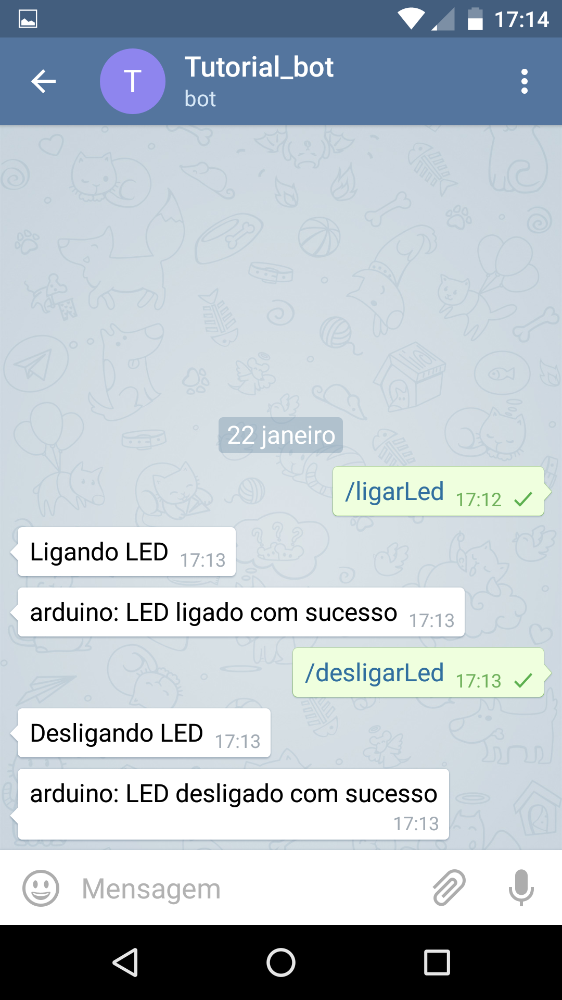

Nesse tutorial simples eu vou mostrar a vocês como integrar o Telegram, Python e Arduino em conjunto. Para mostrar como eles podem trabalhar juntos nós vamos fazer uma coisa simples, vamos controlar um LED do Arduino (acender e desligar) mandando comandos no Telegram. Você deve estar se perguntando, mas que coisa simples! Concordo com você, mas apartir desse exemplo simples é possivel fazer coisas mais complexas, eu só vou dar uma base de como fazer essa comunicação com os três, depois você pode fazer várias coisas, só depende da sua criatividade :D.
Eu vou admitir que você tem uma noção básica de Python O.O. e Arduino, então eu não vou ser tão detalhista porque o objetivo não é aprender Python e nem Arduino, e sim fazer essas três maravilhas trabalharem juntas (Uhuulll). Esse é o meu primeiro tutorial, sejam bonzinhos comigo :D.
Visão geral do sistema:
Instalações e configurações:
Vamos agora fazer toda a configuração para a gente poder brincar um pouco :D.
-
Python
Primeiro vamos baixar o Python 3.4, escolha a opção de 32 ou 64 bits de acordo com o seu sistema operacional, e instale - link .
Nós vamos usar uma ferramenta do Python chamada Virtualenv, ela nos permite criar ambientes virtuais de desenvolvimento do Python em nossa pasta pessoal. Essa ferramenta faz uma "cópia" da pasta do Python, onde você pode instala apenas as bibliotecas que você precisa, sem afetar a pasta principal do Python, massa não?! Então, após de ter instalado o Python, vamos instalar o virtualenv.
Abra o CMD, e digite "c:\Python34\python.exe pip install virtualenv", deve aparecer algo como isto:
Depois de ter instalado o virtualenv, preciso que você crie uma pasta chamada TutorialTelegram (a pasta pode ter outro nome também), você colocar onde achar melhor no seu computador.
Agora vamos criar s nossa virtualenv. Abra o CMD dentro da pasta que acabamos de criar. Após isso digite "virtualenv myvenv". Virtualenv é o comando que se da para criar o ambiente virtual e myvenv é o nome que eu escolhi para minha pasta onde vai estar o Python, você pode escolher outro nome se você quiser. Depois de ter feito isso deve aparecer algo como isto:
Pronto criamos nosso ambiente virtual, agora vamos rodar ele, digite "myvenv\scripts\activate". Você vai saber se esta rodando quando aparecer o nome da pasta do seu ambiente virtual no inicio da linha do CMD, deve aparecer algo como isso:
Após termos iniciado nosso ambiente virtual vamos instalar as bibliotecas que vamos usar, pyserial e telepot.
-
Instalando o pyserial:
Essa biblioteca vai nos ajudar a gente se comunicar com o Arduino. Digite “pip install pyserial", deve aparecer algo como isto:
-
Instalando o telepot:
Essa biblioteca vai nos ajudar usar o Telegram junto com o Python. Digite “pip install telepot”, deve aparecer algo como isto:
-
Pronto finalizamos a parte da configuração do Python, fácil não? hehe.
-
Arduino
Para conseguirmos fazer esse tutorial vamos precisar de uma protoboard, um LED, um resistor de 220 ohms e o Arduino claro (eu estou usando o Mega, o Uno também serve). Se você não tiver um LED, pode usar o blink do Arduino. Tendo isso em mãos vamos instalar a IDE do arduino para podermos inserir o código dentro dele - link .
Conseguiu? Ótimo, é só isso por enquanto :D.
-
Telegram
Agora que configuramos o Python e o Arduino, agora vamos para o Telegram. Bem é preciso que você tenha o aplicativo Telegram instalado no seu celular, se não tiver, instale. Bem o Telegram recentemente liberou a API Telegram Bot Plataform, e é ela que vamos usar hoje, para mais informações clique aqui! Vamos começar por uma introdução básica do que vamos usar.
-
O que são Bots?
Bots são simplesmente contas Telegram operados por software, e não por pessoas, eles muitas vezes têm características de IA. Eles podem fazer qualquer coisa - ensinar, brincar, pesquisa, integrar-se com outros serviços. Só depende de você :D.
Para criar o bot você deve usar o @BotFather. Procure no Telegram do seu celular o @BotFather,vdeve aparecer algo como isto:
Toque no @BotFather vai aparecer algo como isto e clique em “Começar”:
Depois vai aparecer uma lista de comandos que você vai poder usar no seu Bot, mas nós vamos apenas usar por enquanto o “/newbot”. Esse comando vai criar o nosso Bot, deve aparecer algo como isto:
Nessa parte você deve colocar o nome que você quer dar ao seu bot, para esse tutorial eu dei o nome de “Tutorial_bot”:

Agora ele pede um nome de usuário para o seu bot, ele pede que o nome que você for dar termine com “bot”, vou colocar o meu de “TutorialPythonBot”:
Depois de criado o bot ele gera um Token para a gente configurar ele, guarde esse token e não passe ele para ninguém, com esse token as pessoas poderão alterar seu bot, e não queremos isso certo? Procure-o assim como você procurou pelo BotFather, usando o nome do seu bot, no caso o meu foi “TutorialPythonBot”:
Acho? Você pode clicar em começar, mas não vai acontecer nada pois ele ainda não está “vivo”, vamos dar vida a ele? \0/
-
Implementação:
Ufaa, finalmente terminamos de preparar as coisas para poder começar a parte que interessa hehehe. Vamos primeiro fazer a comunicação do Python com Telegram, depois de tudo estar funcionando partimos para o Arduino hehe.
Abra a sua IDE para usarmos o Python. Não tem uma IDE? Procure no Google e baixe uma. Lembra do nossa ambiente virtual que criamos, então quando nós criamos ela a nossa IDE não está configurada para poder usar aquele ambiente, mas para configurar é simples, abra sua IDE e procure onde você configura o Python. Depois disso você procura o local que você colocou seu ambiente virtual e selecione o "python.exe" que está dentro da pasta "scripts" e salva. Para voltar a usar o Python normal é só você fazer os mesmos passos, mas só que agora você procura o Python "original". Pronto? Vamos lá.
Nós vamos aprender daqui para frente a ver como é a estrutura de uma mensagem de texto do Telegram, vamos saber como fazer o nosso Bot enviar uma mensagem, identificar uma mensagem que o usuário enviar e outras coisas.
Primeiro vamos começar por um exemplo básico, vamos testar se o bot que criamos está funcionando. Olhe o código abaixo:
O que nós fizemos aqui não foi nada complicado, primeiro importamos a biblioteca Telepot que instalamos lá no começo, lembra?! Depois na linha 3 chamamos a classe Bot, passando como argumento o token do bot que criamos lá em cima. E temos como resultado as informações do nosso Bot. Pronto já sabemos que nosso bot está ok. Só uma coisa as mensagens de TEXTO enviadas para o seu bot, tem essa cara:
Você viu que a estrutura não passa de dicionários, fácil de manipular não acha? OBS: Existem estrutura diferentes para outros tipos de mensagem (voz, imagem, arquivo, etc).
Os futuros usuários do seu bot vão mandar mensagens para ele, mas como nós sabemos que mandaram uma mensagem, simples, olhe o código abaixo:
Meu Deus quanta coisa!!!!! Calma não tem nada demais. O que tem de novo?
- Criamos uma classe chamada TelegramTutorial e fizemos ela herdar de telepot.Bot. Você viu que lá em cima quando usamos o "telepot.Bot" tivemos que passar o token do nosso bot, por isso quando herdamos de "telepot.Bot" temos que passar esse token via argumento, então criei esse argumento com o nome de token também e coloquei ele como argumento do construtor da classe, obrigando quem for usar a nossa classe ter que passar o token do bot. Na linha 7 eu usei o super já que estamos herdando de uma classe base que é a "telepot.Bot", como dito acima temos que passar o token como parametro para ela, então no "__init__" do super passamos o token como parametro :D.
- Na linha 9 foi criado um método chamado “handle_message” que recebe como parametro a estrutura de uma mensagem como mostrei acima. Como eu falei a vocês cada mensagem tem um tipo de estrutura diferente, como eu quero só receber mensagens de texto eu fiz um “if” onde se no dicionário que eu recebo como parametro não tiver a chave “text” eu não faço nada.
- Se a mensagem for texto eu vou para o segundo “if” e ele acessa o conteudo do dicionario e testa se aquela string começa com “/” se sim, eu envio uma mensagem como mostrado na linha 14.
- Nós podemos enviar mensagem usando o metodo “”sendMessage”, que deve receber o ID da pessoa que está enviando e a mensagem que é do tipo String. Nós acessamos esse ID do jeito que você viu no código.
- Na linha 16 foi criado uma metodo runBot que executa um while constante, para poder ficar ouvindo o tempo todo se chegou alguma mensagem nova.
- Dentro do bloco Try na linha 22 temos o metodo “getUpdates”, ele é responsavel por receber o que for mandado para o nosso bot. O parametro "timeout" é quanto tempo o bot deve esperar por uma resposta do servidor do Telegram, se em "timeout" segundos o servidor não receber nenhuma mensagem de usuário, ele envia uma lista vazia pro bot, e "offset" é pra eu não pegar update repetido, caso não tenha esse parametro iriamos sempre pegar a mesma mensagem, etc. Vou explicar como evitar quando chegarmos a linha 28;
- Na linha 24 temos o “if” que testo se recebi algo se sim, eu entro no bloco do “if”.
- O getUpdates ele retorna uma lista de dicionários, então eu faço um for com o conteúdo dessa lista que é a estrutura de mensagem que mencionei, pegando cada conteúdo da chave “message” passando como argumento para o metodo handle_message, se você ficou confuso logo a baixo tem um exemplo dessa estrutura que o getUpdate recebe;
- Na linha 28 temos uma lógica para não pegar a mesma mensagem, você pode reparar que o conteúdo que eu recebo de "getUpdate" tem uma chave chamada "update_id" o conteúdo dessa chave é o número que identifica a mensagem, então eu preciso fazer com que eu pegue a próxima mensagem. Por exemplo, eu recebi o update com o ID 001, se eu não falar para o "offset" que eu quero a próxima mensagem ele vai sempre repetir a mesma mensagem, depois retire o "offset" e teste :D. Então o que nós fazemos é, pegamos a mensagem anterior usando “[-1]”, na chave ['update_id'], adicionamos mais 1. Usando o exemplo acima, que o ID era 001 agora passa a ser 002. Quando o "while" rodar de novo eu passarei o novo ID para o "offset" e ele me retornará apenas a próxima mensagem.
- A linha 30 é tratamento de exceção se o usuário apertar CRTL+C na linha de comando o programa aborta .Na linha 32 e 33 eu imprimo qualquer exceção que for dirente da de cima, mas a diferença que o código continua executando.
- Por fim nas linha 37 e 38 eu instancio a minha classe passando meu token do meu bot, e depois eu chamo o metodo para executar meu bot.
Ufa essa foi grande, mas não tem nada demais viu :p.
Abaixo esta a imagem do conteúdo que eu recebo de "getUpdate":
Rodando o código temos o seguinte resultado no bot:
Viu que massa :D. O que nós fizemos foi fazer o bot responder caso a mensagem que o usuário enviou começasse com “/”. Essas mensagens que começam desse jeito são chamadas de comandos.
Você viu que quando iniciamos uma nova conversa com o bot, começamos com o comando “/start”, que tal a gente fazer com que quando o usuário desse esse comando o bot respondesse uma mensagem de “Bem-vindo ao Bot :D”, vamos lá, olhe o código:
Vamos lá, o que mudou? Bem adicionamos dois novos métodos, “handle_start” e “handle_command”, e mudamos a linha 13 do método "handle_message", antes se o “if” fosse verdadeiro nós enviavamos uma mensagem, mas agora nós chamamos o novo método “handle_command”. O método “handle_command” básicamente o que ele faz é pegar o texto que foi enviado pelo usuário, tirar o “/” da mensagem (nós já sabemos que é um comando, passou pelo “if” do método handle_message) e concatenar com a string “handle_”, para no if perguntar se existe um método nessa classe com o nome formado, se tiver nós chamamos o método correspondente ao comando. No nosso caso é se o usuário enviar “/start”, vai se formar a string “handle_start”, e então ele vai chamar o método “handle_start” que nada mais faz que mandar uma mensagem de “Bem-vindo ao Bot :D” para o usuário. Testa ai, deve aparecer algo desse tipo:
Irado não é?! Experimente adicionar mais comandos, é só você fazer mais métodos com o nome dos comandos que você desejar, sinta-se a vontade, só não esqueça de dar funcionalidades ao seus métodos.
Agora que sabemos detectar mensagens, comandos, e enviar mensagens de acordo com o comando dado, vamos usar o Arduino? Bem o exemplo que eu vou fazer hoje como vocês sabem é simples, vai ser de ligar e desligar um LED via Telegram. No código vamos renomear o método “handle_start” para “handle_ligarLed” e criar um novo método “handle_desligarLed”, observe o código:
\o/ quanta coisa!!! Relaxa, é simples. Foi adicionado um import na linha 2, que é um arquivo python de nome Arduino que contém o código que faz a comunicação do arduino com o Python. Na linha 12 eu tenho uma variável de instancia que eu criei que recebe usa uma função do arquivo "Arduino.py" que eu criei, essa função retorna a comunicação com o Arduino (vou mostrar o código). Como eu disse criamos dois novos métodos, bem os dois tem a mesma coisa, a unica coisa que muda é os argumentos DEACTIVATE_LED, ACTIVATE_LED. Vamos as explicações, nas linhas 5 e 6 adicionamos duas constantes que vamos usar para fazer o LED desligar e ligar. Como os métodos de ligar e desligar tem as mesmas linhas vou explicar apenas um. Na linha 22 assim que o comando é dado o bot retorna uma mensagem falando que está ligando o LED, na linha 24 usamos a variável que tem a comunicação e usamos um método da biblioteca serial para escrever na porta para ligar o LED. Na linha 26 faço a variável “response” receber a leitura dessa porta. Nas linhas 28 a 31 eu verifico se o Arduino respondeu ou não, faço a variável “response” receber uma String de acordo com o “if” e na linha 33 mando o bot responder ao usuário. De modo análogo o método “handle_desligarLed” tem a mesma estrutura, a diferença que ele desliga o LED.
Bem e vocês devem se perguntar como foi feita essa comunicação, bem como eu disse criei o arquivo "Arduino.py", na mesma pasta onde estamos usando o nosso código do Telegram, no arquivo "Arduino.py" temos:
Lembra que no começo deste tutorial instalamos a biblioteca “pyserial”, então nós usamos ela agora. Na linha 1 importamos a biblioteca, depois criamos uma função chamada “start_communication”, essa função retorna a comunicação com o porta do Arduino. O primeiro argumento é o nome da porta no caso a do Windows começa com “COM”, ai varia o número, você na IDE do Arduino deve selecionar a porta que quer. Depois de ter escolhido ou de saber qual porta seu Arduino esta conectado é só substituir. O segundo parametro é a velociade da comunicação (OBS: a mesma velocidade que está no código do Python deve estar no código do Arduino). O terceiro é o tempo de que eu tenho no máximo receber alguma mensagem do Arduino.
Agora que terminamos tudo o que tinhamos que fazer com o Python e o Telegram, vamos para o Arduino, vai ser bem simples. Vamos colocar o código no Arduino e montar o circuito para acender o LED. Aqui está o código que você deve colocar dentro do Arduino:
Bem o que esse código faz. Eu tenho três "defines", o "LED_PIN" que corresponde ao número da porta do Arduino a qual está conectado o LED e os "ACTIVATE_LED" e "DEACTIVATE_LED" que estão com strings "1" e "2" para usar para a comparação no "if". Na função "setup" na linha 8 eu defino a velocidade da conexão e na linha 9 eu passo o pino de saida que eu quero. Na função "loop", na linha 13 eu crio uma variável "s" recebendo uma String que eu leio da porta do Arduino, esse valor quem passou foi a gente lá em cima no código do Python, depois de ter lido esse valor eu vejo se é para ligar ou não o LED, nas linha 16 e 20 eu falo para manda o sinal de ligar/desligar o LED, já nas linhas 17 e 21 eu peço para enviar uma mensagem para o Python ler, que é para avisar que foi ligado ou desligado o LED.
-
Circuito:
-
Aqui está a imagem do circuito que eu fiz para poder acender o LED, caso vocês tenham dúvida de como ficou:
Quando você montar seu circuito do Arduino lembre-se de que o LED esta conectado da porta 9, caso não tenha LED como eu comentei lá em cima, você pode usar o blink do Arduino, mas não se esqueça de troca o valor da LED_PIN para 13 e conectar o jumper na porta 13 do Arduino :D.
Bem depois de ter carregado o Código para o Arduino, montado circuito para acender o LED, e ter feito os arquivos Python, teste para ver se tudo funciona :D
 |
 |
|---|
Finalmentes:
Chegamos ao fim desse tutorial (Uhhuuull). Se você conseguiu fazer tudo certo, parabéns você é tenso, caso não, tente novamente, que você vai conseguir. Eu fiz um vídeo mostrando ao vivo o resultado do nosso tutorial :D.
Bem pessoal é isso, espero que tenham gostado do tutorial e que tenham conseguido entender e consigam fazer coisas mais legais com essas três ferramentas juntas, até o próximo tutorial :D.
Link para o repositório que está o código desse tutorial --> aqui!